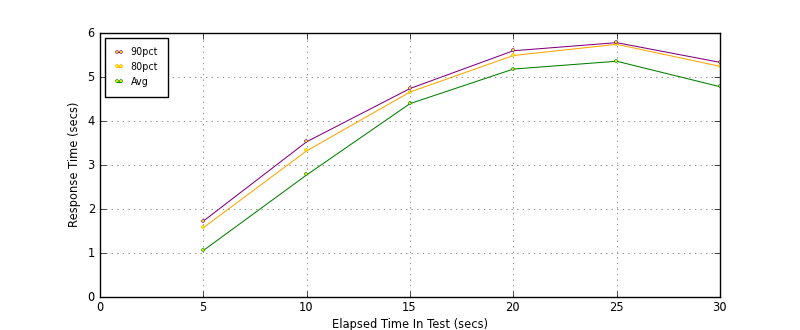
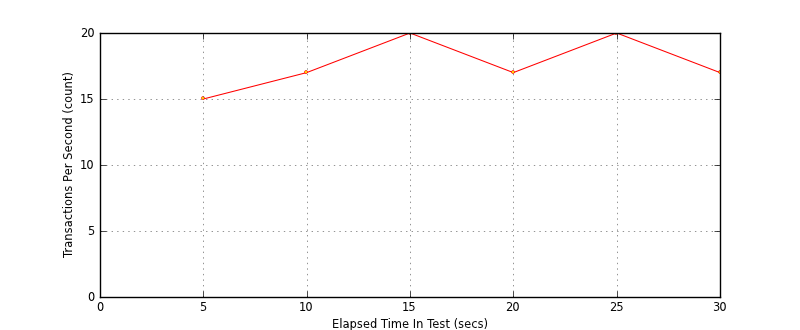
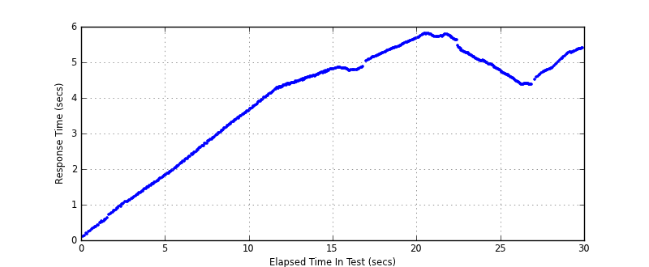

Performance Results Report
Summary
transactions: 647
errors: 0
run time: 30 secs
rampup: 10 secs
test start: 2014-01-16 12:57:50
test finish: 2014-01-16 12:58:20
time-series interval: 5 secs
workload configuration:
| group name | threads | script name |
|---|
| user_group-1 | 100 | read_user.py |
All Transactions
Transaction Response Summary (secs)
| count | min | avg | 80pct | 90pct | 95pct | max | stdev |
|---|
| 647 | 0.099 | 4.024 | 5.265 | 5.576 | 5.723 | 5.803 | 1.532 |
Interval Details (secs)
| interval | count | rate | min | avg | 80pct | 90pct | 95pct | max | stdev |
|---|
| 1 | 79 | 15.80 | 0.099 | 1.056 | 1.575 | 1.725 | 1.778 | 1.829 | 0.501 |
| 2 | 87 | 17.40 | 1.871 | 2.775 | 3.322 | 3.528 | 3.576 | 3.696 | 0.545 |
| 3 | 103 | 20.60 | 3.694 | 4.395 | 4.658 | 4.738 | 4.782 | 4.815 | 0.293 |
| 4 | 86 | 17.20 | 4.769 | 5.180 | 5.488 | 5.597 | 5.649 | 5.686 | 0.308 |
| 5 | 104 | 20.80 | 4.738 | 5.358 | 5.743 | 5.781 | 5.793 | 5.803 | 0.357 |
| 6 | 88 | 17.60 | 4.369 | 4.779 | 5.242 | 5.333 | 5.370 | 5.401 | 0.345 |
Graphs
Response Time: 5 sec time-series

Response Time: raw data (all points)
Throughput: 5 sec time-series

Custom Timer: get_tweets
Timer Summary (secs)
| count | min | avg | 80pct | 90pct | 95pct | max | stdev |
|---|
| 547 | 0.097 | 4.023 | 5.264 | 5.576 | 5.723 | 5.803 | 1.532 |
Interval Details (secs)
| interval | count | rate | min | avg | 80pct | 90pct | 95pct | max | stdev |
|---|
| 1 | 79 | 15.80 | 0.097 | 1.056 | 1.575 | 1.725 | 1.778 | 1.828 | 0.501 |
| 2 | 87 | 17.40 | 1.871 | 2.774 | 3.322 | 3.528 | 3.576 | 3.695 | 0.545 |
| 3 | 103 | 20.60 | 3.694 | 4.395 | 4.658 | 4.738 | 4.782 | 4.815 | 0.293 |
| 4 | 86 | 17.20 | 4.769 | 5.180 | 5.488 | 5.596 | 5.649 | 5.686 | 0.308 |
| 5 | 104 | 20.80 | 4.738 | 5.358 | 5.743 | 5.780 | 5.792 | 5.803 | 0.357 |
| 6 | 88 | 17.60 | 4.369 | 4.779 | 5.242 | 5.333 | 5.369 | 5.401 | 0.345 |
Graphs
Response Time: 5 sec time-series
Response Time: raw data (all points)

Throughput: 5 sec time-series